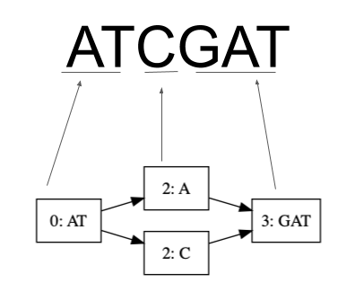
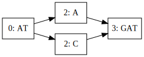

Creating the Initial Variation Graph
Variation graphs represent the reference genome as a graph. For an introduction, read my previous post An Introduction to Variation Graphs or Untangling graphical pangenomics by Erik Garrison.
Core to variation graphs is the maintenance of a tight mapping between the reference and the graph. To maintain this mapping we establish a coordinate system — a way to reliably associate a node in the graph, with a position in the reference and vice versa. 
A Coordinate System
We use the concepts offset and ref to maintain a coordinate system.
An offset is the number of bases from the first node where the variation occurs; offsets are one-indexed in the reference but zero-indexed in the graph. Offsets are suited to translating linear reference to graphs because it’s how variations are viewed within the reference anyway.
For example, we could represent a variation “A” occuring at position 3 in the reference “ATCGAT” as: 
Notice how we start counting from 0 in the graph? We call that being zero-indexed.
A ref is a unique identifier which we get from the reference description line. A graph created from just one reference will have all nodes contain the same value in the ref field.
As you may have suspected, some problems arise from this coordinate system. They are a matter of progressive update and read alignment but not a matter of initial graph construction and are therefore beyond the scope of this post. They include:
- Dealing with nodes that are from alignments i.e. not aligned to a linear sequence
- Changes in the linear reference which change the coordinate system.
Structure of the Graph
Properties of our graph:
- Directed acyclic graph
- Offsets are increasing/ascending natural numbers as we walk through the graph
Node
A node is built out of a racket structure, a struct in many languages, with the following fields:
| Name | Description |
|---|---|
| segment | a string of alphabet A, T, C, and G |
| offset | offset from zero on the reference |
| id | sha256 hash of the concatenation of segment, “+” and offset |
| ref | reference from which the segment is derived |
| links | a list of the IDs of the next nodes |
The use of segment and links to mean vertices and edges are inspired by A proposal of the Graphical Fragment Assembly format.
We generate a sha256 hash out of the segment, a plus symbol and the offset to generate a value for id.
For example, given a segment “ATCGATG” at offset 34 we can generate an ID like so:
generate-id(<string> segment, <natural-number> offset)
// take note of the + sign in the concatenation
string-and-offset <- concatenate("ATCGATG", "+","34")
hash-as-bytestring <- sha256hash(string-and-offset)
id <- bytestring-to-hex-string(hash-as-bytestring)
return idI chose hashes over UUIDs because they are reproducible and will have constant time lookups in the occasion that we want to retrieve a node from the graph given its sequence and offset. This should come in handy in visualization especially on the web.
I also considered the likelihood of collisions in the hashes. I expect it to be low when dealing with 15,000 base pair size viruses. I shall expound on this in a later post. One thing to note is that vg uses UUIDs and they work for human genome so I believe graphite, the tool that I’m writing to implement this, can get away with sha256 hashes for more complex genomes.
Variation
A variation is a structure containing the following fields:
| Name | Description |
|---|---|
| segment | a string of single of alphabet A, T, C, and G |
| offset | offset from zero on the reference |
| ref | an identifier of the reference it’s derived from |
It is extracted from a Variant Call Format file, the main file format for genomic variation data.
The Graph
I had to implement a graph in graphite due to the lack of serialization (a required feature for progressive updates) in the racket graph library; I would have preferred to add serialization support to graph but couldn’t do that and still stay on track with graphite.
The graph is built out of an adjacency map of id, key, to node, value.
Using a hash table and not a list has the following pros:
- No duplicates
- Constant-time lookups if we have a
segmentand itsoffset
and cons:
- Lacks ordering despite linear offsets which would come in handy for updates
Construction
The general idea is:
- Given a
listof variationstructuressorted byoffsetand a linear reference (string) - Loop through each variation and insert an alternative segment into the reference at the position specified in the variation.
In the case of graphite, we recursively split the reference into a list of pairs that imply directionality. For example, the pair (a b) would translate to an edge from node a to node b.
We then have a function gen-directed-graph that takes this list of pairs and generates a directed graph from it using foldl. Graphite creates the graph in the 3 steps detailed below.
1. Generate a Node List (of Pairs)
O(n); n being the size of the variation list
gen-node-list(reference, variations, prev-position = f, prev-nodes = <empty-list>)
if empty-list? variations
// the base case of gen node list
cap(reference, previous-position, previous-nodes)
else if (is-number previous-position) and (previous-position = current-offset)
// we have more than one variation in this position
handle-duplicate(reference, variations, previous-position, previous-nodes)
else
// we have just one variation in this position
handle-unique(reference, variations, previous-position, previous-nodes)- reference: the linear reference
- variations: a list of variations
- prev-position: the offset of the previous variation
- the default value is false. (I wish I used an int here)
- prev-nodes: the previous node or nodes with relation to the current one
- the default value is an empty list.
A mutually recursive function takes from the tail of variation list, variations, and returns a list of pair of nodes (a, b) where the direction of the nodes is a -> b for example a list like [(a b), (b c), (c d)] should later translate to a -> b -> c -> d.
1.1 Cap
Creates the initial variation i.e “caps” the directed graph. It creates a first node that points to the first variations.
cap(reference, previous-position, previous-nodes)
map(
lambda node: (substring(reference, 0, previous-position), node)
previous-nodes
)1.2 Handle Unique
Inserts a variation where there isn’t an alternative. In a case where there’s only 1 alternative path so we break the current sequence and insert our alternative path, for example, a -> b and a -> c.
handle-unique(reference, variations, previous-position, previous-nodes)
...1.3 Handle Duplicate
Inserts extra alternative variations where they already exist. for example a -> b, a -> c and a -> d.
handle-duplicate(reference, variations, previous-position, previous-nodes)
...2. Generate a Directed Graph Out of a List of Pairs
O(n); with n being the size of the list of pairs
gen-directed-graph(g, list-of-pairs)
foldl(
// make sure that you're not overwriting the list of edges of a node as you
// update it. This check makes `gen-directed-graph` slow approx 4n.
lambda pair: add-adjacent-node(g, first(pair), second(pair))
g
list-of-pairs)- g: a graph
- list-of-pairs: a list of pairs
The reason for the bad performance of gen-directed-graph is that it checks to avoid overwriting any existing nodes. This is to mean that if there’s a relationship like: a -> b and a -> c we have to make sure not to lose the edge a -> b when creating a -> c. It, however, does suffice for virus data.
3. Return a Variation Graph
A composition of gen-node-list and gen-directed-graph
gen-vg(reference, variations)
node-list <- gen-node-list(reference, variation)
graph <- gen-directed-graph(node-list)
return graphVisualization and Output
Graphite supports the generation of graphs in: GFA, for interoperability with tools such as vg and bandage; DOT, for visualization; and a serialized form, .gra.
Optimization Idea
Representing the alphabet in 4 bits, as is done in BioD, because:
- the extra bits accommodate ambiguous bases
- we could then perform fast and efficient complimenting though bit shifting
The alphabet would be:
- A as 0001
- C as 0010
- T as 0100
- G as 1000
However, most of the optimization would come from graph creation, graph update and search which is what I’m focused on for now.